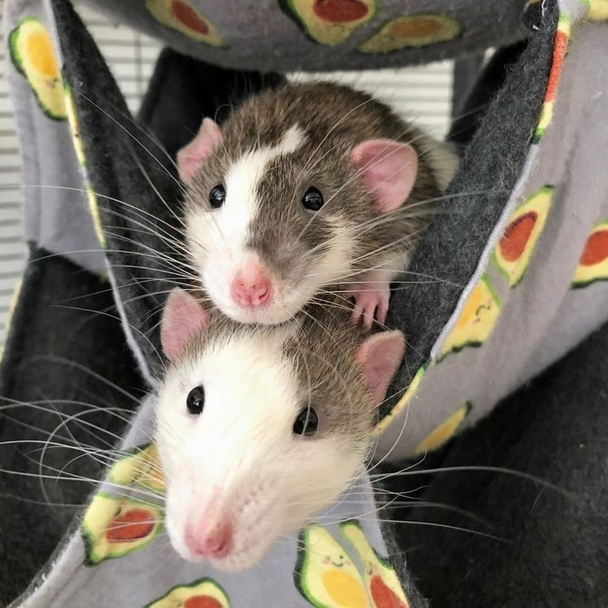
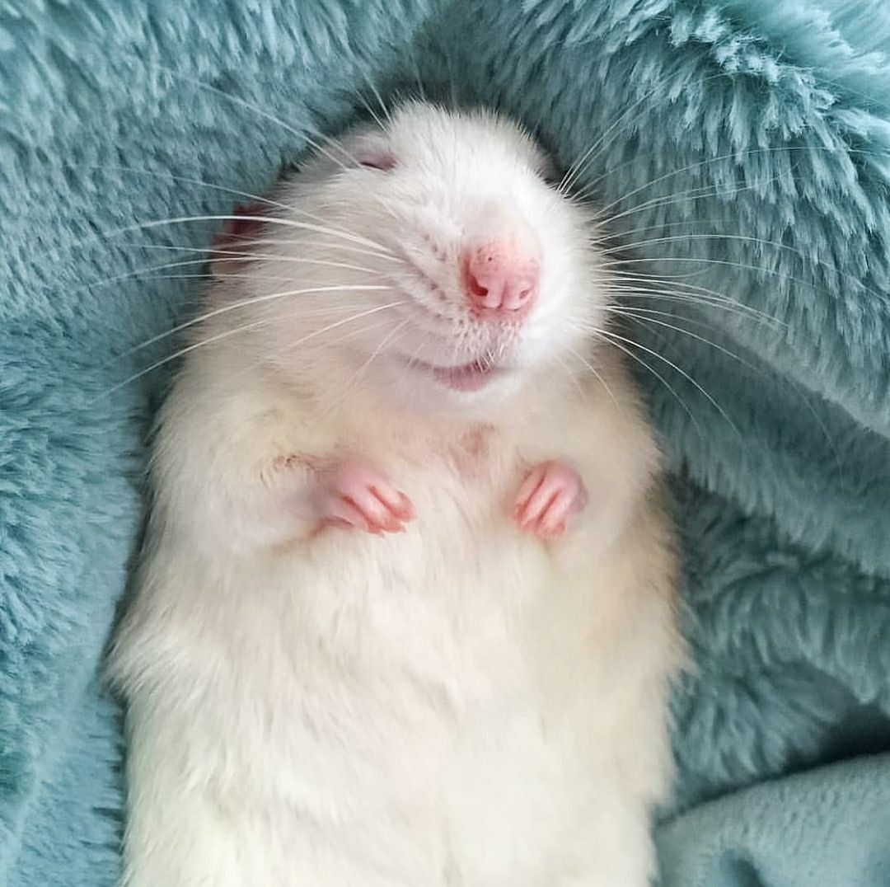

Las ratas como animales de compañía.

Las ratas domésticas son animales pequeños que pertenecen a la familia de los roedores. Se destacan
por su inteligencia, curiosidad y capacidad para relacionarse tanto con otros animales como con las
personas. Su tamaño, sus hábitos y su manera de interactuar con el entorno las convierten en
mascotas particulares, pero también en animales con muchísimo para descubrir. Aunque muchas veces se
las relaciona con animales salvajes o plagas, las ratas domésticas pueden ser una compañía dulce,
con mucha inteligencia y súper cariñosas.
A continuación, me gustaría contar algunas de las curiosidades relacionadas a la socialización y su
manera de comportarse siendo mascotas.
Top curiosidades

Son animales sociales
Las ratas son animales sociales y disfrutan muchísimo de vivir acompañadas, tanto por otras
ratas como por las personas. En general, necesitan interacción y estímulos para mantenerse
activas y saludables. Una rata que vive completamente sola puede enfermarse o hasta morir de
tristeza.
Extra
Las ratas no solo se acompañan, duermen juntas, se acicalan entre ellas y juegan. El
contacto físico es una parte muy importante de su vida social.
Aunque tengan fama de ser animales “sucios”, las ratas pasan una gran parte del día acicalándose y
manteniendo limpio su pelaje. De hecho, tienen comportamientos de higiene muy similares a los de
otros animales domésticos y hasta se han considerado más limpios que los gatos. Por eso, si una rata
está sana y puede mantenerse limpia por sí misma, normalmente no necesita baños frecuentes. Además,
su piel es bastante sensible y un baño innecesario puede irritarla.
Las ratas tienen una gran capacidad de aprendizaje y pueden resolver problemas, recordar recorridos y
asociar diferentes acciones con recompensas, son muy inteligentes. También pueden aprender trucos
sencillos y reconocer sonidos asociados a sus cuidadores. Con entrenamiento y repetición, incluso
pueden aprender a responder a su nombre.
Correr, trepar, explorar y esconderse forma parte de su comportamiento natural. Por eso, una rata
doméstica necesita mucho más que una jaula vacía, necesita lugares para trepar, túneles, escondites,
juguetes y actividades que le permitan explorar. Un ambiente variado ayuda a mantenerlas activas y
también les evita el aburrimiento.
Cada rata demuestra el afecto de una manera diferente, pero muchas disfrutan subir por el cuerpo de
sus cuidadores, acomodarse sobre los hombros y buscar mimos. Algunas incluso se acercan por
iniciativa propia para que las acaricien. Con el tiempo, pueden desarrollar una relación muy cercana
con las personas con las que conviven.
Ellas tienen su propia personalidad. Algunas son extremadamente cariñosas y buscan constantemente
atención, mientras que otras son más independientes, tranquilas, tímidas o incluso un poco gruñonas.
Convivir con ellas permite descubrir que, al igual que ocurre con perros y gatos, cada individuo
tiene sus propias preferencias y carácter.
¡Tienen cosquillas! Las ratas pueden emitir vocalizaciones de alta frecuencia durante juegos y
situaciones positivas, especialmente cuando reciben determinadas caricias o interactúan de manera
estimulante. Algunas de estas vocalizaciones se encuentran por encima del rango de audición humano y
están asociadas con estados positivos. Por eso, en ciertos experimentos se las utiliza como una
forma de estudiar el comportamiento relacionado con el juego y las emociones.
¡Son empáticas! Las ratas han demostrado comportamientos de ayuda hacia sus compañeras. En algunos
experimentos, una rata podía trabajar para liberar a otra que estaba atrapada, incluso cuando tenía
otras opciones disponibles. También se ha observado que pueden compartir recursos y responder a
situaciones de necesidad de otros individuos. Esto ha llevado a numerosos estudios sobre empatía,
cooperación y comportamiento social en estos animales.